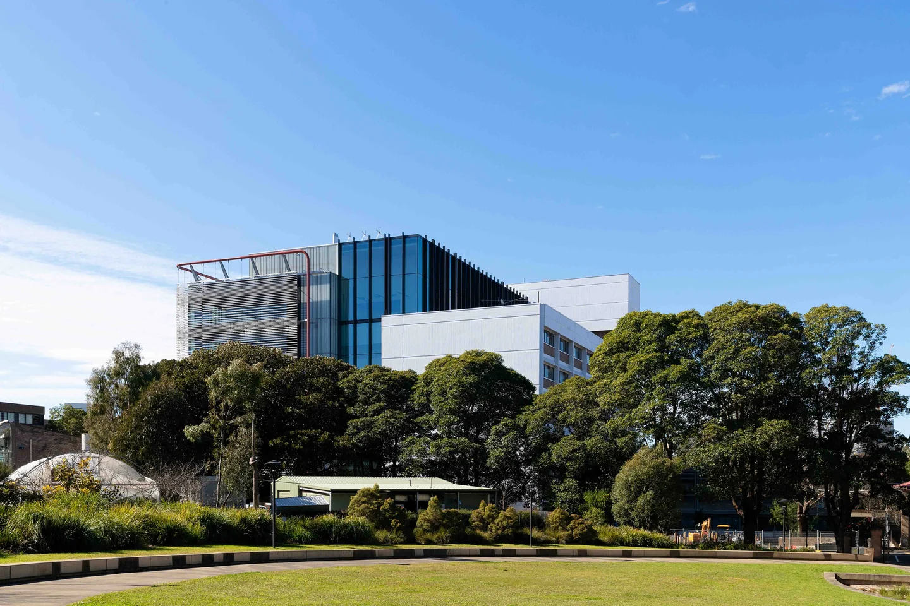
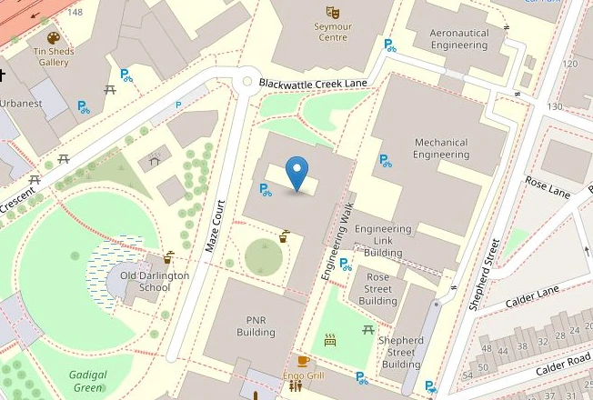

Visit the lab
J03 Electrical Engineering BuildingSchool of Electrical and Computer Engineering
The University of Sydney
Maze Crescent, Darlington campus Open campus map
Research enquiries
Associate Professor Dong Yuan
Director, iDLSys
dong.yuan@sydney.edu.au
Campus map
The pin marks J03, next to Cadigal Green in the engineering precinct.
View on OpenStreetMap